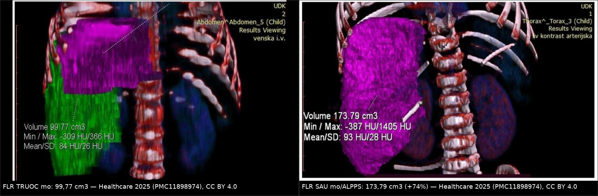
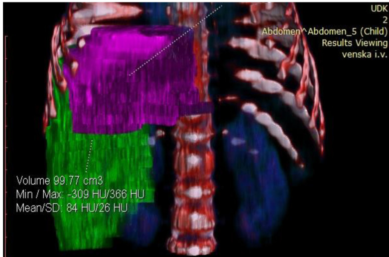
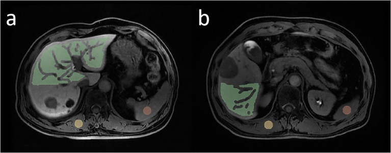

1821 — Suy gan sau cắt gan (post-hepatectomy liver failure, PHLF): thể tích gan còn lại, ISGLS, 50-50 và bẫy "còn ít gan ≠ suy gan" / Post-hepatectomy liver failure
Tags: pattern:suy-gan pattern:teo-gan-con-lai vung:gan vung:hoanh-phai score:ISGLS score:PHLF-50-50 score:FLIS score:HUI anatomy:FLR protocol:CT-volumetry protocol:Gd-EOB-DTPA protocol:PVE protocol:ALPPS incidentaloma:dich-o-bung
Mức chắc chắn (certainty): tổng hợp y văn (literature synthesis) — tự biên từ tổng quan định nghĩa PHLF (PMC6120608), tổng quan chiến lược tăng thể tích – tăng dòng (PMC9714434), tổng quan tăng FLR trước cắt gan lớn (PMC12222409), đoàn hệ 292 ca cắt gan lớn với Gd-EOB-DTPA (PMC12120443, CC BY), đoàn hệ 885 ca HCC với FLIS (PMC12283857, CC BY-NC), đoàn hệ 1.154 ca mô hình tiên lượng (PMC12038414, CC BY-NC) và ca ALPPS ở nhũ nhi 6,2 kg (PMC11898974, CC BY 4.0) — ảnh lấy từ hai bài sau. Không gắn một ca nguyên văn đơn lẻ của riêng bài.
Bài này là nhánh "chức năng" của 1814 – Rò mật sau cắt gan và 1820 – Rò mật–màng phổi. Hai bài trước trả lời "dịch ở đâu, mật hay không, dẫn lưu thế nào". Bài này trả lời câu hỏi còn lại sau một ca cắt gan lớn: vàng da – INR tăng – cổ trướng sau mổ là do gan còn lại không đủ, hay do rò mật/nhiễm khuẩn/huyết khối tĩnh mạch cửa? Trả lời sai thì hoặc mổ lại vô ích, hoặc bỏ sót một nhiễm khuẩn ổ bụng đang tiến triển.
Câu chốt: "Còn ít gan" trên CT không phải là chẩn đoán. PHLF là hội chứng lâm sàng – xét nghiệm (INR và bilirubin tăng từ ngày hậu phẫu 5 trở đi), với tử vong 0% ở độ A và 54% ở độ C (ISGLS, PMC6120608); còn thể tích gan còn lại (FLR) chỉ là yếu tố nguy cơ — ngưỡng < 25%** ở gan lành và **> 40% khi gan bệnh (PMC9714434), hay theo cách nói thực hành 20 / 30 / 40% cho gan lành / sau hóa trị / xơ gan (PMC12222409).
1. Tổng quan bệnh học – cơ chế hình ảnh
- Định nghĩa ISGLS (2011) — câu phải thuộc: PHLF là suy giảm khả năng tổng hợp – bài tiết – giải độc của gan xuất hiện sau mổ, đặc trưng bởi tăng INR và tăng bilirubin máu vào hoặc sau ngày hậu phẫu thứ 5 (POD 5), trên nền gan bình thường hoặc đã bệnh. Ba độ: A (chỉ bất thường xét nghiệm, không đổi xử trí), B (lệch khỏi diễn tiến thường, cần chăm sóc tích cực không xâm lấn), C (cần can thiệp xâm lấn), tử vong 0% → 54% (PMC6120608).
- TẠI SAO mốc POD 5 mà không phải ngày 1–2: sau cắt gan, INR và bilirubin tăng nhẹ là sinh lý do giảm khối tế bào gan chủ động + truyền máu + dịch; cái phân biệt "đáp ứng viêm sau mổ" với "PHLF" là quỹ dự trữ chức năng không hồi phục. Đây cũng là lý do các tiêu chuẩn đều chốt ở ngày 5: 50-50 lấy POD 5, ISGLS lấy "on or after POD 5", còn Hyder lấy ngày 3 vì nhắm tới can thiệp sớm.
- Ba tiêu chuẩn định lượng kinh điển — nhớ số, đừng nhớ tên:
- 50-50 (Balzan): PT < 50% (INR > 1,7) VÀ bilirubin > 50 µmol/L (> 2,9 mg/dL) ở POD 5 → tử vong sớm 59% so với 1,2% khi không đạt cả hai; độ chính xác dự báo tử vong trong viện ~97,7% (775 ca cắt gan, PMC6120608).
- Mullen: bilirubin đỉnh > 120 µmol/L dự báo tử vong 90 ngày (1.059 ca).
- ISGLS: như trên, phân độ A/B/C — dùng để so sánh và chỉ định can thiệp, không dùng để phát hiện sớm.
- TẠI SAO CT thể tích KHÔNG đo chức năng — vật lý HU: CT chỉ đếm thể tích hình học của nhu mô (số voxel × thể tích voxel); nó không biết mật độ tế bào gan sống, không biết mức tưới máu, không biết ống mật có thông hay không. Một FLR 30% gồm nhu mô vàng xơ + ứ mật có chức năng thấp hơn nhiều FLR 22% lành. Vì vậy mọi ngưỡng thể tích đều là ngưỡng sàng lọc, không phải ngưỡng chẩn đoán.
- TẠI SAO Gd-EOB-DTPA "đo được chức năng" — cơ chế phân tử: gadoxetate được OATP1B1/1B3 ở màng tế bào gan bắt vào trong tế bào rồi thải qua MRP2 vào ống mật; 20 phút sau tiêm khoảng 50% liều nằm trong gan. Gan càng nhiều tế bào sống và càng thông mật thì tín hiệu pha gan (hepatobiliary phase, HBP) càng cao. Đó là lý do HUI (hepatic uptake index) và FLIS (functional liver imaging score) tách được bệnh nhân nguy cơ cao mà thể tích đơn thuần bỏ sót.
- FLIS — 3 miền, 0–2 điểm mỗi miền, tổng 0–6: (1) chất lượng ngấm nhu mô gan ở HBP, (2) độ tồn lưu tín hiệu trong tĩnh mạch cửa, (3) mức bài tiết vào đường mật. FLIS thấp = chức năng thấp. Trong 885 ca HCC, mô hình FLIS + cắt gan lớn + ALBI dự báo PHLF có ý nghĩa lâm sàng (độ B–C) với AUC 0,746 (phát triển) và 0,717 (nội kiểm); tỷ lệ biến cố 7,7% / 7,2% (PMC12283857).
- HUI — vì sao thắng thể tích: trong 292 ca cắt gan lớn, 8,6% có PHLF nặng (B–C); HUI AUC 0,758 so với sFLR thể tích 0,628 (p < 0,001); HUI + MELD 3 → 0,803 (PMC12120443). Nói cách khác: cùng một thể tích, chức năng mới quyết định.
- TẠI SAO phải tăng thể tích trước mổ — sinh lý bù: cắt gan làm toàn bộ lưu lượng tĩnh mạch cửa dồn vào phần còn lại → tăng áp lực xoang + ứng lực cắt (shear stress) + cytokine (HGF, IL-6) → tăng sinh tế bào gan. Chặn dòng cửa bên sẽ cắt (PVE/PVL) tạo đúng phản ứng đó ở bên còn. Vì vậy hình ảnh học của "chuẩn bị cắt gan" là đo FLR trước – theo dõi FLR sau can thiệp.
- Ngưỡng thể tích hay dùng (phải ghi cùng bối cảnh nhu mô):
- FLR/TLV < 25%** ở gan lành và **> 40% khi có bệnh nền gan là ngưỡng nguy cơ (PMC9714434).
- Cách nói thực hành: sFLR tối thiểu 20% (gan lành) · 30% (sau hóa trị tân bổ trợ) · 40% (xơ gan) (PMC12222409).
- Tốc độ tăng trưởng động học (kinetic growth rate, KGR) ≥ 2%/tuần sau PVE gắn với không có ca PHLF và không có biến cố gan trong loạt của Shindoh — nên KGR quan trọng hơn con số tuyệt đối (PMC12222409).
- Chức năng đo bằng 99mTc-mebrofenin: ngưỡng FLR 2,69%/min/m² (de Graaf 2010), được xác nhận lại ở 98 ca ALPPS (Tomassini 2020) (PMC10927876).
- Hai chiến lược tăng FLR — số để so:
- PVE/PVL đơn thuần: tăng ~36% ± 18 thể tích; ~20% bệnh nhân không tới được cuộc mổ thứ hai vì FLR chưa đủ hoặc u tiến triển; biến chứng chung 2,2%, tử vong do thủ thuật 0% (PMC12222409).
- ALPPS: tăng 68% ± 38 (p < 0,0001), KGR 14,1 ± 6,0 vs 6,1 ± 5,4 (p < 0,0001), đạt sFLR 30% sau 28 ngày 92% vs 47%, tỷ lệ mổ được 92% vs 57%, nhưng biến chứng Clavien–Dindo ≥ 3a 43% vs 43% và tử vong 90 ngày 8,3% vs 6,1% (p = 0,68) (PMC12222409).
- LVD (portal + hepatic vein deprivation): tăng 59% vs 48% và 61% vs 29% so với PVE ở hai loạt lớn; KGR 3,5 vs 2,5 sFLR/tuần (p < 0,001) (PMC9714434).
- Ca minh họa định lượng (nhũ nhi 6,2 kg, 67 cm): u gan ác tính lớn; FLR 99,77 cm³ / ETLV 400,77 cm³ = 24% → được đánh giá quá nhỏ, sẽ dẫn tới suy gan, nên làm ALPPS; ngày 7 sau mổ FLR 173,79 cm³ (+74,1%), tỷ lệ 43%; thì hai ngày 8; ra viện ngày 15; mô bệnh u nguyên bào cơ vân ác tính (malignant rhabdoid tumor), bờ âm (PMC11898974).
2. Mẫu hình + chẩn đoán phân biệt theo bối cảnh (gamut)
- Bối cảnh 1 — "vàng da + INR tăng + cổ trướng" ngày 3–10 sau cắt gan lớn: gamut gồm PHLF thật, rò mật/biloma (1814), huyết khối tĩnh mạch cửa (PVT), nhiễm khuẩn ổ bụng/viêm phổi, huyết khối/thiếu máu phần gan còn lại sau thắt động mạch, hội chứng gan nhỏ – dòng chảy (small-for-size syndrome, SFSS), viêm gan do thuốc/truyền máu.
- Bối cảnh 2 — bệnh nhân đã PVE/PVL/ALPPS, đang chờ thì hai: hình ảnh là bài toán thể tích: FLR có tăng đủ và KGR có đạt không; kèm kiểm tra tắc tĩnh mạch cửa bên đã nút, giãn đường mật bên còn lại, huyết khối lan sang bên còn lại (biến chứng làm hỏng cả kế hoạch).
- Bối cảnh 3 — "gan còn lại rất nhỏ" trên CT nhưng bệnh nhân tỉnh, bilirubin giảm dần: đây là teo – tăng sinh sinh lý, không phải PHLF; điều trị là dinh dưỡng và theo dõi, không mổ lại.
- Bối cảnh 4 — vàng da tăng dần sau mổ, không sốt, men gan tăng nhẹ: nghĩ hẹp/rò đường mật hoặc thiếu máu đường mật (ischemic cholangiopathy); siêu âm/CT thấy giãn ống mật hoặc biloma → MRCP/ERCP chứ không phải "đợi gan hồi phục".
- Bối cảnh 5 — sốc, toan chuyển hóa, vàng da nặng, gan còn lại ngấm thuốc kém: PHLF độ C ± nhiễm khuẩn huyết; đây là nhóm xét ghép gan cấp (bridge) hoặc hệ thống hỗ trợ gan, tử vong rất cao.
- Bối cảnh 6 — trẻ em/gan nhỏ tuyệt đối: ngưỡng thể tích người lớn không dùng nguyên; ở trẻ, tỷ lệ FLR/ETLV vẫn là mốc thực hành (24% → 43% trong ca ALPPS nhũ nhi), nhưng dự trữ chức năng tính theo bề mặt cơ thể và khả năng tăng sinh rất mạnh — đây là lý do ALPPS khả thi ở trẻ 6,2 kg.
3. Bảng so sánh phân biệt (ma trận đối chiếu)
| Thực thể (entity) | Hình ảnh điển hình | Chốt vào (rule-in) | Chốt loại (rule-out) | Gợi ý xác nhận |
|---|---|---|---|---|
| PHLF (ISGLS) | Gan còn lại nhỏ, ngấm thuốc đồng nhất nhưng mỏng, cổ trướng, tràn dịch màng phổi phải; không có ổ dịch khu trú | INR ↑ + bilirubin ↑ từ POD 5, không có ổ nhiễm/rò giải thích được | Có biloma/áp-xe hoặc PVT giải thích được vàng da → không quy hết cho PHLF | ISGLS A/B/C, theo dõi bilirubin–INR 48 giờ/lần |
| Rò mật / biloma | Ổ dịch dưới hoành/mặt cắt, vỏ ngấm thì muộn; có thể lan màng phổi | Ổ dịch mới + bilirubin dịch cao; dịch mật qua dẫn lưu | Ổ dịch không tăng theo thời gian, không liên quan mặt cắt → không phải rò | CE-MRCP/ERCP; xem 1814, 1820 |
| Huyết khối tĩnh mạch cửa (PVT) | Khuyết thuốc trong lòng tĩnh mạch cửa, thành mạch ngấm, có thể lan tới nhánh bên còn lại | Không ngấm thuốc lòng mạch thì cửa + giãn nhánh trước tắc | Lòng mạch ngấm đều, phổ Doppler có dòng → loại trừ | CT thì cửa mỏng 1 mm, Doppler, cân nhắc kháng đông |
| SFSS (gan nhỏ – dòng chảy) | Gan còn lại căng, phù, ngấm mạnh thì động mạch, cổ trướng nhiều, tĩnh mạch cửa giãn tốc độ cao | Cổ trướng kháng trị + bilirubin tăng sớm + lưu lượng cửa cao sau cắt gan lớn/ghép | Bilirubin giảm sau 1 tuần, cổ trướng đáp trị liệu → không phải SFSS | Doppler (vận tốc cửa), đo áp lực; giảm dòng bằng thuốc/điều chỉnh |
| Nhiễm khuẩn ổ bụng | Ổ dịch có khí, thành dày, đông đặc quanh | Khí trong ổ dịch + sốt + bạch cầu tăng/procalcitonin | Ổ dịch đồng nhất, không khí, không sốt → ưu tiên theo dõi | Chọc hút, cấy; dẫn lưu |
| Thiếu máu đường mật (ischemic cholangiopathy) | Giãn không tương xứng + hẹp rải rác đường mật trong gan còn lại, không có khối | Hẹp nhiều đoạn sau thắt/embolization động mạch gan | Cây mật đều, không hẹp, chỉ giãn do thuốc → không phải | MRCP; ERCP can thiệp |
| Gan còn lại "nhỏ sinh lý" | Thể tích nhỏ nhưng ngấm thuốc đều, không cổ trướng nhiều | Bilirubin giảm dần, INR về bình thường trong 7–10 ngày | Bilirubin tăng liên tục → không phải sinh lý | Theo dõi xét nghiệm, không can thiệp |

*Trái: FLR trước mổ 99,77 cm³, tỷ lệ FLR/ETLV 24% — dưới ngưỡng an toàn. Phải: ngày 7 sau thì một, FLR 173,79 cm³ (+74,1%), tỷ lệ 43% — đủ để cắt thì hai ngày 8. Nguồn: Healthcare 2025 (PMC11898974), CC BY 4.0; ảnh ghép letterbox củatools/make_composite.py, không crop.*
Ba con số đọc đúng chỗ (đừng lẫn ngưỡng)
- Ngưỡng nguy cơ (trước mổ): FLR/TLV < 25%** (gan lành) / **> 40% yêu cầu (gan bệnh); sFLR 20 / 30 / 40% theo nhu mô; chức năng mebrofenin < 2,69%/min/m².
- Ngưỡng chẩn đoán (sau mổ): INR và bilirubin tăng từ POD 5 (ISGLS) hoặc PT < 50% + bilirubin > 50 µmol/L ở POD 5 (50-50).
- Ngưỡng theo dõi can thiệp: KGR ≥ 2%/tuần sau PVE; nếu < 2%/tuần mà FLR vẫn thấp → cân nhắc LVD/ALPPS thay vì chờ.
4. Protocol chụp + hệ phân độ/điểm chuẩn hóa
4.1 CT thể tích gan (CT volumetry) — quy trình tối thiểu
- Chỉ định: mọi ca dự kiến cắt ≥ 3 hạ phân thùy (major hepatectomy), gan nền xơ/hóa trị nhiều đợt, hoặc FLR nghi ngờ thấp.
- Kỹ thuật: CT bụng có cản quang, thì tĩnh mạch cửa (60–70 giây), lát ≤ 1 mm (tái tạo 1–2 mm), không uống cản quang để không lẫn với nhu mô; trường nhìn phủ toàn gan từ vòm hoành tới cực dưới.
- Đo: vẽ toàn bộ nhu mô gan (trừ u, trừ đường mật giãn, trừ mỡ) và FLR theo giải phẫu dự kiến; tính bằng cm³, ghi cả thể tích u để không "thổi" FLR.
- Chuẩn hóa: sFLR = FLR / TELV, với TELV ước tính theo bề mặt cơ thể (BSA) (Vauthey) khi gan bị biến dạng bởi u to; dùng FLR/TLV đo được khi gan không biến dạng (PMC12222409).
- Theo dõi sau PVE/PVL/ALPPS: chụp lại 3–6 tuần sau PVE (hoặc ngày 5–8 sau thì một ALPPS), đo cùng mặt phẳng, cùng phần mềm, tính KGR (%/tuần) chứ không chỉ thể tích tuyệt đối.
4.2 MRI chức năng (Gd-EOB-DTPA) — khi thể tích "không đủ tin"
- Chỉ định: FLR sát ngưỡng, gan xơ, sau nhiều đợt hóa trị, nghi ứ mật/viêm đường mật làm thể tích "đẹp mà chức năng kém".
- Kỹ thuật: T1 3D động (+20 phút) thì gan mật (HBP) sau gadoxetate 0,025 mmol/kg; đo HUI trên ROI nhu mô FLR và tính FLIS 0–6; đọc kèm T2/ MRCP để loại ứ mật (làm HBP giảm tín hiệu giả).
- Diễn giải: FLIS thấp / HUI thấp kèm FLR sát ngưỡng → nguy cơ cao, cân nhắc tăng thể tích trước mổ; HUI là biến độc lập mạnh hơn thể tích (AUC 0,758 vs 0,628) (PMC12120443).
4.3 Phân độ ISGLS và luồng xử trí
flowchart TD
A["Cắt gan lớn, POD 5"] --> B{"INR tăng VA bilirubin tăng?"}
B -->|"Không"| C["Không PHLF: theo dõi thường quy"]
B -->|"Có"| D{"Có ổ nhiễm, rò mật, PVT, tắc đường mật giải thích được?"}
D -->|"Có"| E["Điều trị nguyên nhân: dẫn lưu, kháng sinh, kháng đông, ERCP"]
D -->|"Không"| F["PHLF - phân độ ISGLS"]
F --> G{"Độ A: xét nghiệm, không đổi xử trí"}
F --> H{"Độ B: cần hồi sức không xâm lấn"}
F --> I{"Độ C: cần can thiệp xâm lấn"}
G --> J["Theo dõi bilirubin - INR 48 giờ/lần, dinh dưỡng"]
H --> J
I --> K["Hồi sức gan: dinh dưỡng, điều trị cổ trướng, lọc, cân nhắc hỗ trợ/ghép gan"]
- Điều trị nền tảng (không có thuốc đặc hiệu): dinh dưỡng đủ đạm, kiểm soát nhiễm, tránh thuốc độc gan, điều trị cổ trướng; không có chứng cứ cho "thuốc tái sinh gan" trong PHLF độ B–C.
- Vai trò của hình ảnh trong xử trí: không phải để "chẩn đoán PHLF" mà để loại các nguyên nhân chữa được (ổ dịch, PVT, tắc mật) và đo lại FLR khi cân nhắc can thiệp tiếp.
5. Biến thể bình thường và cạm bẫy
- Cạm bẫy 1 — đếm u vào FLR: nếu phần "còn lại" dự kiến có u thứ phát hoặc u xâm lấn, thể tích đo được cao hơn nhu mô lành thật; phải trừ u và trừ vùng sẽ cắt thêm.
- Cạm bẫy 2 — ứ mật làm sai cả thể tích lẫn chức năng: đường mật giãn làm nhu mô ngấm kém trên HBP và tăng thể tích ảo; luôn đọc MRCP/T2 trước khi kết luận "chức năng thấp".
- Cạm bẫy 3 — lệch mặt phẳng đo: so sánh hai lần chụp khác thì, độ dày lát, mức hít vào cho ra chênh 5–10% không thật; KGR tính trên số liệu lệch kiểu này tạo "tăng trưởng giả".
- Cạm bẫy 4 — teo sinh lý sau cắt gan: gan còn lại tăng thể tích nhưng mô học có thể thoái hóa mỡ, ngấm thuốc không đều; không gọi là PHLF nếu bilirubin/INR đã về bình thường.
- Cạm bẫy 5 — "cổ trướng = suy gan": cổ trướng đơn thuần sau cắt gan lớn gặp ở 18,4–54,5% ca tràn dịch (nhóm màng phổi, PMC10727470 trong 1820); cổ trướng không kèm INR/bilirubin tăng không phải PHLF.
- Cạm bẫy 6 — nhiễm trùng che PHLF và ngược lại: sepsis gây vàng da + INR tăng y hệt PHLF; nếu không tìm ổ nhiễm, sẽ điều trị "suy gan" trong khi ổ áp-xe tiếp tục lan.
- Biến thể bình thường dễ nhầm: thùy trái dài, thùy Riedel, rãnh phụ làm thay đổi thể tích ±5%; tĩnh mạch gan phải phụ (IRHV) khiến ranh giới hạ phân thùy 6/7 khác — phải vẽ theo mạch máu, không theo "đường tưởng tượng".
6. Tự lượng giá — Blind Quiz
Ca 1 — trẻ 6,2 kg, u gan lớn, trước mổ đo thể tích gan còn lại

- Bối cảnh: nhũ nhi 6,2 kg, 67 cm, u gan lớn chiếm gần toàn bộ gan phải; INR 1,38, albumin 24,5 g/L.
- Câu hỏi: (1) Vùng tím là gì và con số 99,77 cm³ dùng để làm gì? (2) Với ETLV 400,77 cm³, tỷ lệ này nói gì? (3) Ba lựa chọn tiếp theo?
Bấm để hiện đáp án (findings + chẩn đoán)
- Dấu hiệu: vùng tím là FLR (gan còn lại dự kiến) được phân đoạn 3D; thể tích 99,77 cm³, ETLV 400,77 cm³ → FLR/ETLV 24%.
- Chẩn đoán/ý nghĩa: 24% dưới ngưỡng an toàn (25% cho gan lành, cao hơn nếu gan bệnh) → nếu cắt một thì, nguy cơ PHLF cao.
- Ba lựa chọn: PVE/PVL ± LVD rồi cắt hai thì; ALPPS (đã chọn ở ca này); hoặc không cắt/điều trị giảm nhẹ. Ca thật: ALPPS, ngày 7 FLR 173,79 cm³ (+74,1%), cắt thì hai ngày 8.
- Nguồn ảnh: Healthcare 2025 (PMC11898974), CC BY 4.0.
Ca 2 — bệnh nhân cắt gan lớn, đánh giá chức năng bằng MRI gan mật

- Bối cảnh: HCC, dự kiến cắt gan lớn; MRI Gd-EOB-DTPA 20 phút sau tiêm.
- Câu hỏi: (1) Vùng xanh là gì? (2) Vì sao đo tín hiệu ở pha gan mật lại phản ánh chức năng? (3) Nếu FLR 26% nhưng HUI thấp, bạn làm gì?
Bấm để hiện đáp án (findings + chẩn đoán)
- Dấu hiệu: ROI (xanh) vẽ trên nhu mô gan còn lại ở pha gan mật — dùng tính HUI/FLIS, không phải để đo thể tích.
- Vì sao: gadoxetate vào tế bào gan qua OATP1B1/1B3 rồi thải qua MRP2; tín hiệu cao = nhiều tế bào gan sống + đường mật thông. Gan xơ/ứ mật làm tín hiệu giảm dù thể tích không đổi.
- Xử trí: FLR sát ngưỡng + HUI thấp → nguy cơ PHLF cao, cân nhắc tăng thể tích trước mổ (PVE/LVD/ALPPS) và tối ưu dinh dưỡng, thay vì mổ ngay.
- Nguồn ảnh: Front Oncol 2026 (PMC13357168), CC BY 4.0.
Ca 3 — "gan còn lại nhỏ" sau cắt gan phải, ngày 7
- Bối cảnh: cắt gan phải + cắt phân thùy IV; ngày 5 bilirubin 38 µmol/L, INR 1,5; ngày 7 bilirubin 30 µmol/L, INR 1,3; CT không có ổ dịch, tĩnh mạch cửa thông.
- Câu hỏi: (1) Có PHLF không? (2) Tiêu chuẩn nào quyết định? (3) Cần làm gì tiếp?
Bấm để hiện đáp án (findings + chẩn đoán)
- Dấu hiệu: bilirubin và INR tăng nhẹ quanh POD 5 rồi giảm; không đạt 50-50 (PT không < 50%, bilirubin không > 50 µmol/L) và không có nguyên nhân khác trên CT.
- Chẩn đoán: dao động sinh lý sau cắt gan lớn, không phải PHLF độ B–C; theo ISGLS chỉ ở mức độ A nếu có tăng nhẹ.
- Việc làm: theo dõi xét nghiệm, dinh dưỡng, không can thiệp xâm lấn; chụp lại chỉ khi sốt, đau, hoặc xét nghiệm xấu đi.
Bài liên quan chéo
- 1814 – Rò mật sau cắt gan: phân độ ISGLS, biloma, ERCP/PTBD
- 1820 – Rò mật–màng phổi (bilothorax)
- 135 – Viêm tụy cấp theo Atlanta
Ảnh
- Tên file:
1821_suy-gan-sau-cat-gan_<Modality>_<PMCID>-FigN.jpg; nguồn + giấy phép từng ảnh ởimages/CREDITS.md. - Ảnh ghép
composite_1821_FLR-truoc-sau.jpgtạo bằngtools/make_composite.py(letterbox nền đen, không crop/kéo giãn).
Không dùng để chẩn đoán độc lập khi chưa có người hướng dẫn.